Postcards, city walks, food, and memories from new places.
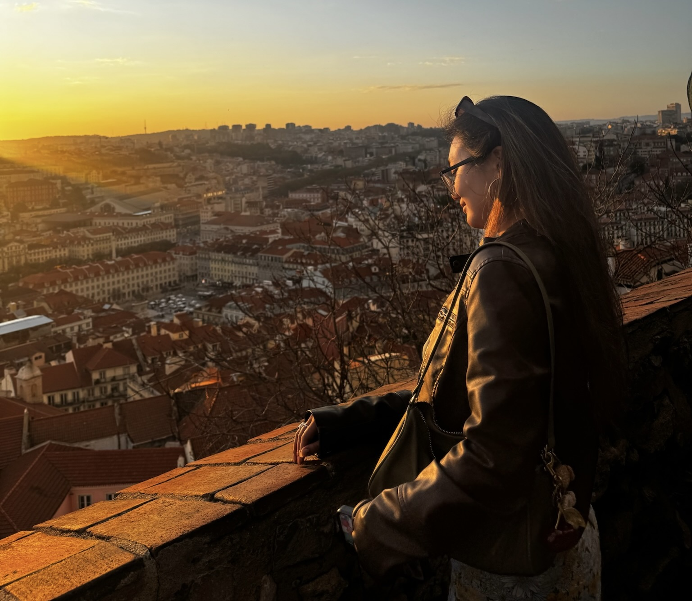
The Story
Travelling is something really important for me that I am so lucky to have experienced. Growing up, my family couldn't afford to go on vacations or even get passports, so I stayed in LA up until the moment I got to go to college in Boston.
While in college, I started working and earning for myself. I got to go to Cancun, Madagascar, Portugal, Denmark, Scotland, Croatia, and home to the Philippines. Going worldwide has shown me how much the world has to offer, and I truly am not done yet.
Gallery
Jumping into cenotes in Cancun.
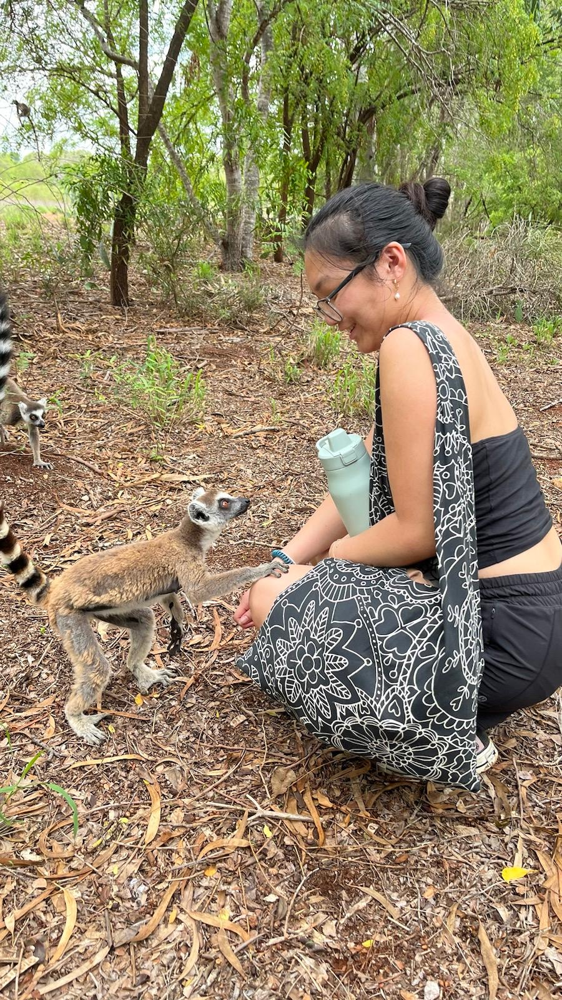
King Julian graced me.Zebu. Best animal.
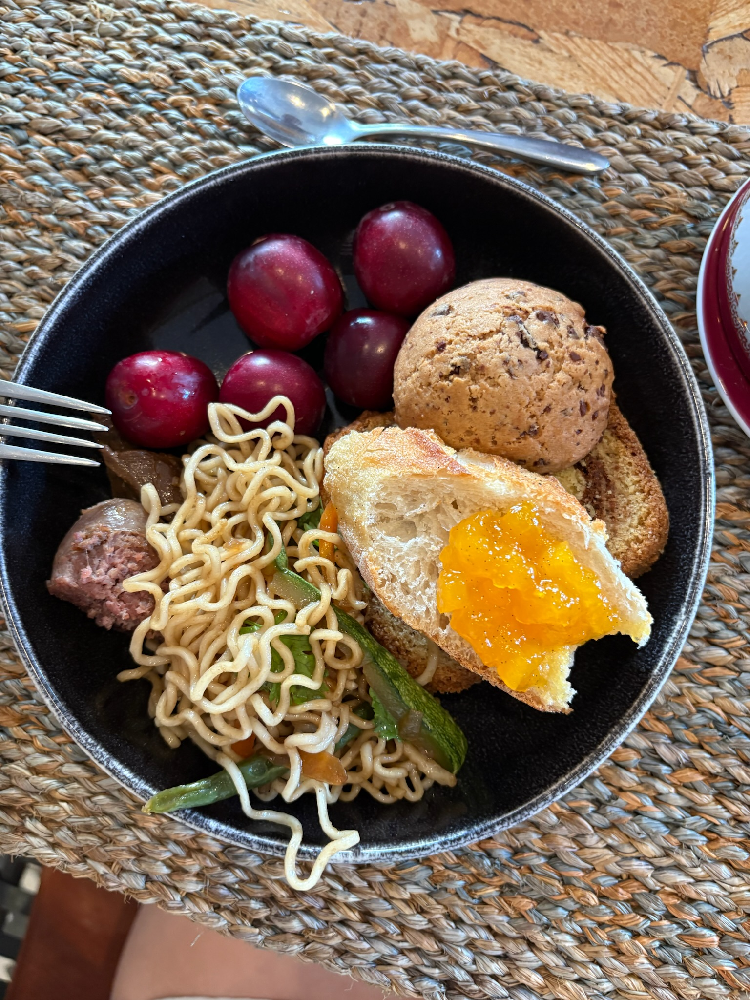
Breakfast. Surpisingly similar to foods you'd find in Southeast Asia. Because of the waters connecting them, Malagasy as a language is more similar to Indonesian than African language.
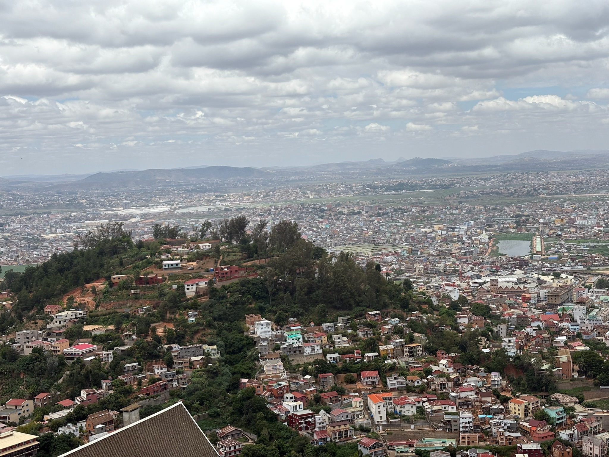
The view from the palace of Antananarivo.
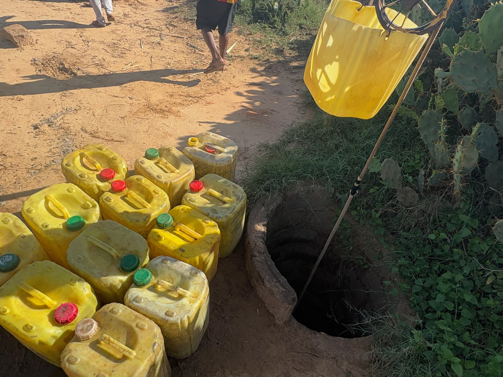
How the people who live in Ambovombe collect freshwater from wells that rise after the first rainfall.Swinging over the rice terraces in Bali.
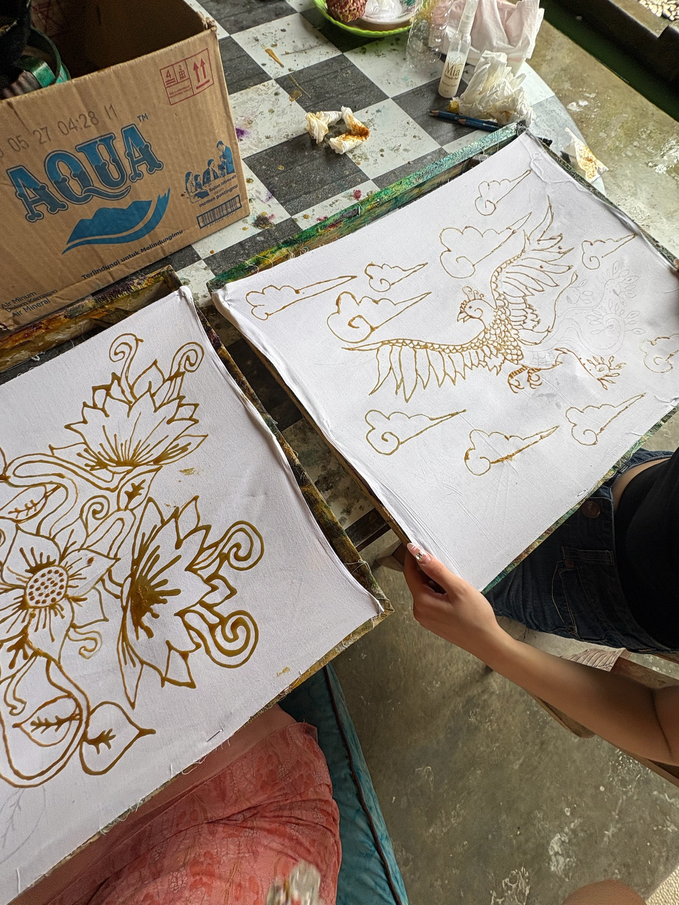
Practicing Batik, a pattern making technique from Indonesia.
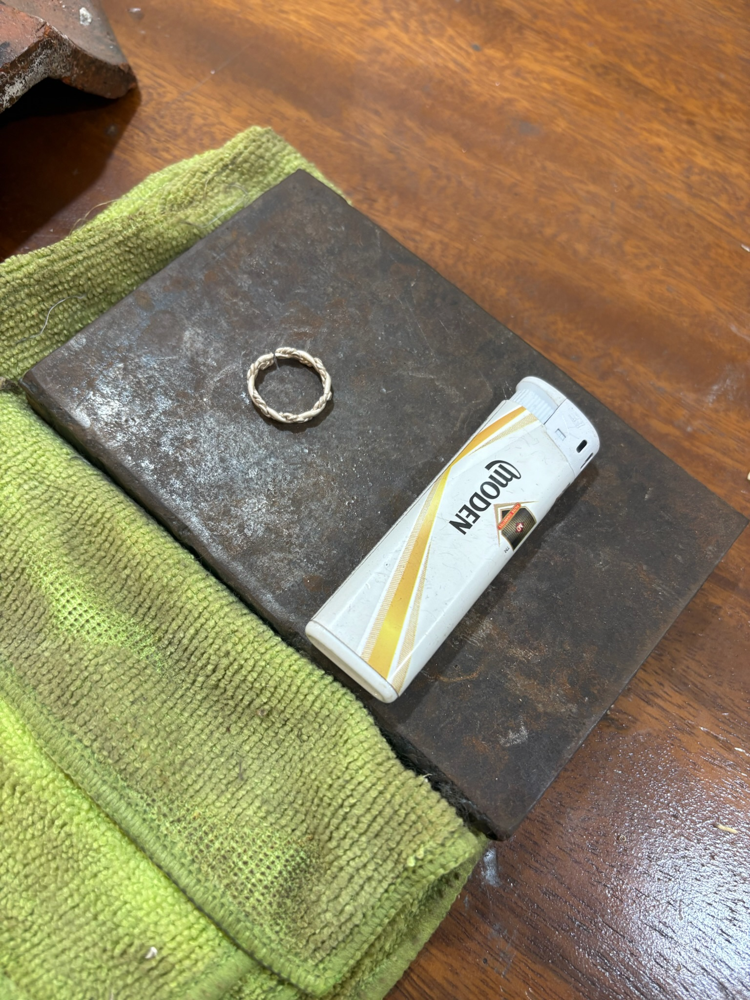
Making handmade silver rings.Pena palace in Portugal.The view from Lisbon palace. Octopus salad is soooo good.A vineyard in Douro valley.Mercado do Bolhão (Bolhão Market) in Porto, Portugal.Cabo da Roca.Fake millionare property.
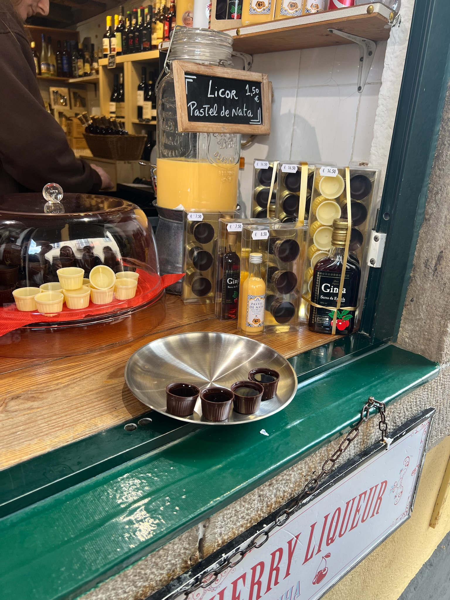
Cherry liquor in chocolate cups!
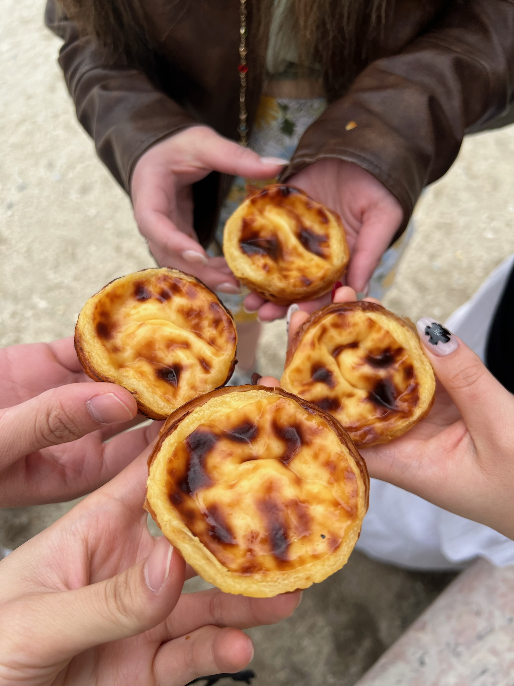
The original Pastel de Nata.
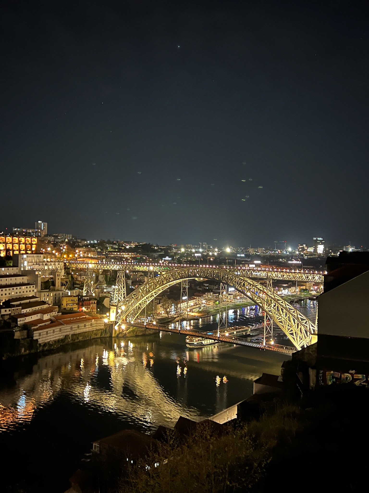
Porto river.
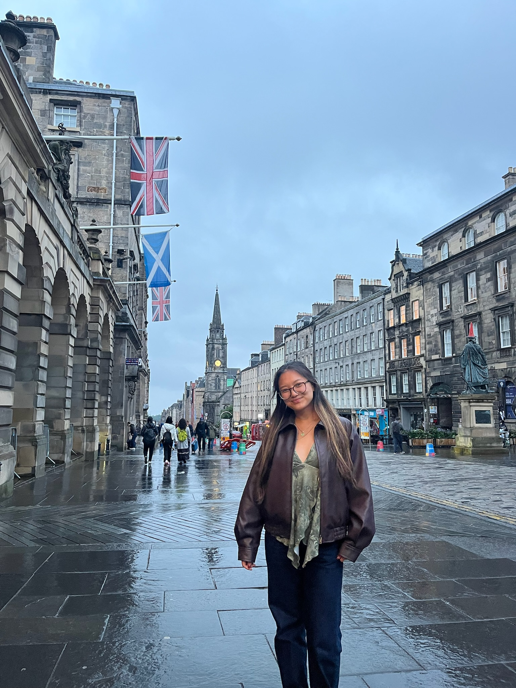
A trip to Edinburgh.
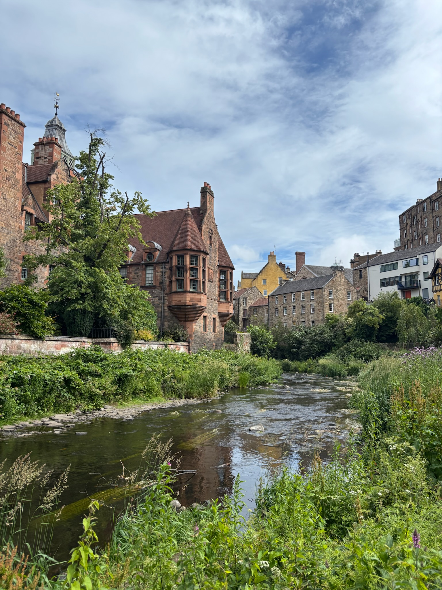
Dean Village.
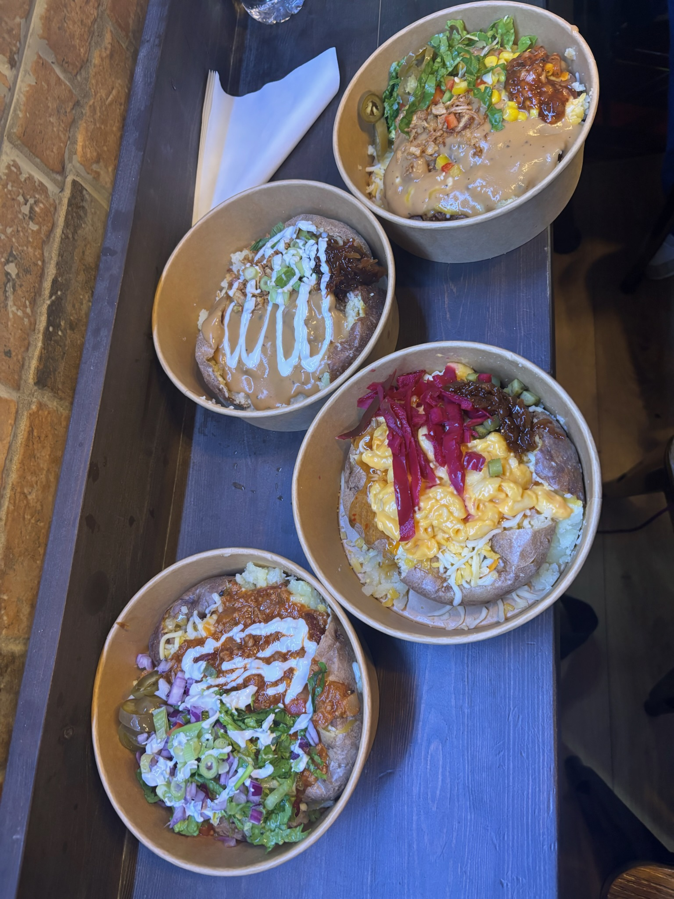
Haggis is actually really good.Travelling by tuktuk in Fort Dauphin.